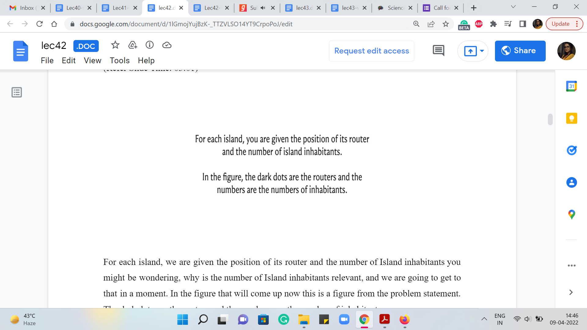
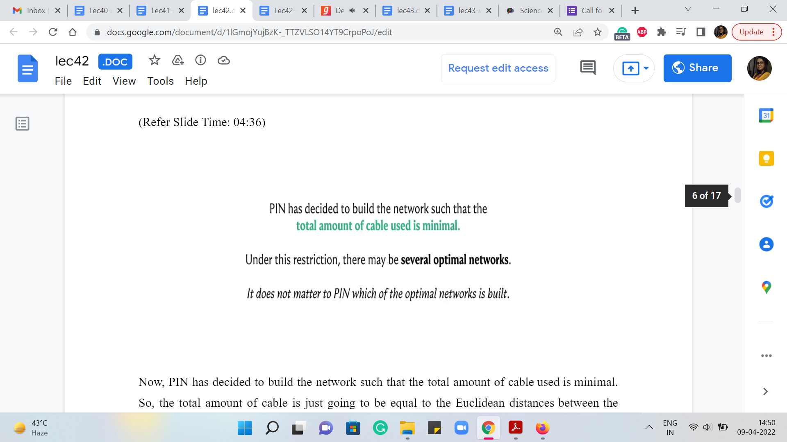
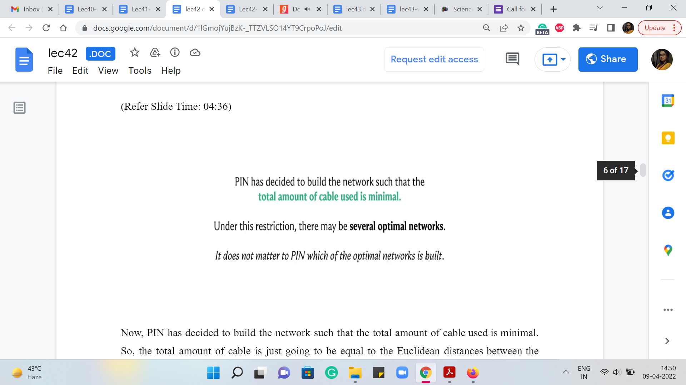
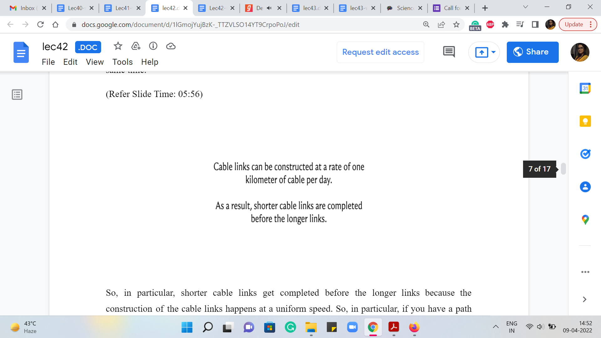
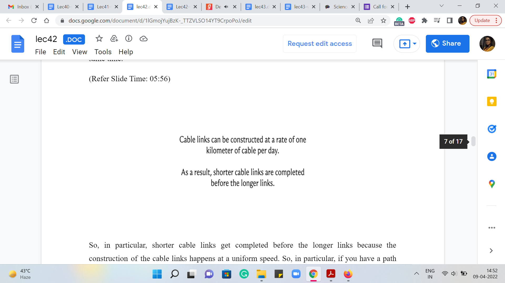
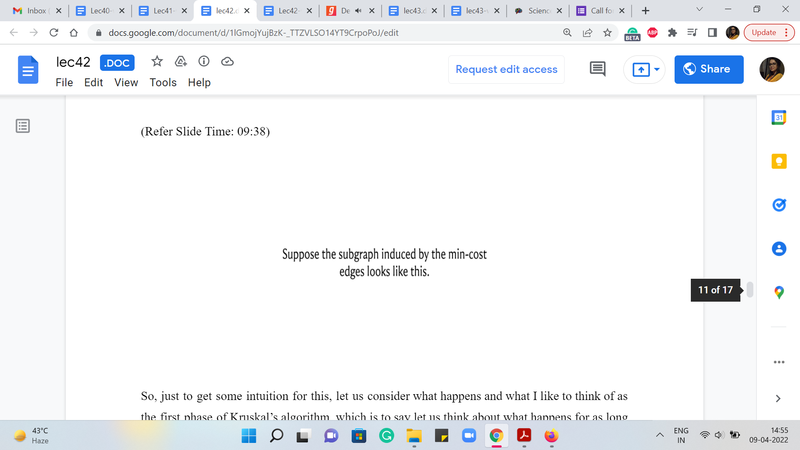
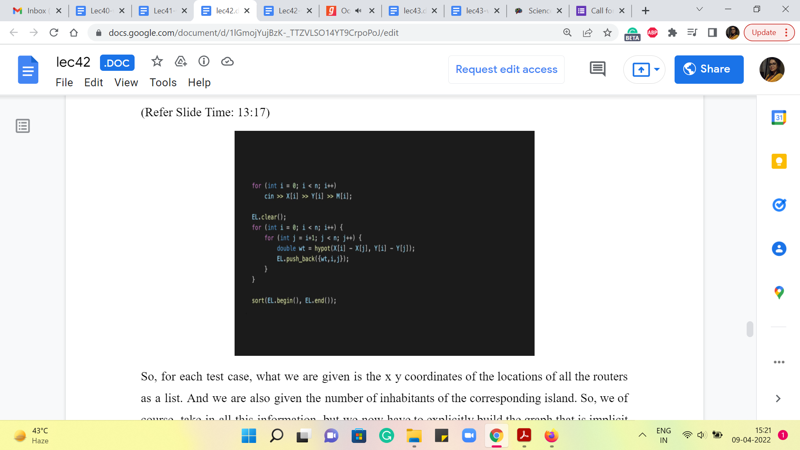

Minimum Spanning Trees - Module 4 (Island Hopping)
Lecture - 42
Minimum Spanning Trees - Module 4 (Island Hopping)
(Refer Slide Time: 00:12)

Welcome back to the fourth and the final module in week 7 of Getting Started with Competitive Programming. So, we have been talking about minimum spanning trees. And in this final module, I want to talk about a problem called ‘island hopping,’ which was actually the ICPC World Finals problem from back in 2002. And to practice, you can find this problem on the UVA platform, the problem ID is 1013.
So, in the first module, I remarked that there are two kinds of MST problems that you are likely to encounter. One is where even recognizing the graph abstraction is not obvious. And seeing that what you are looking for is an MST is really the bulk of the work. Once you have figured out that, that is what needs to be done, doing it is actually pretty straightforward. And you can simply use the algorithms that you have learned quite directly.
On the other hand, the other kinds of problems are where the fact that it is an MST (the fact that there is a graph underlying the story) is reasonably transparent and obvious. But what you are looking for may not exactly be MST, but some quantity that is related to the MST in some way. So, you might need to tweak the algorithms that you know a little bit to get to the answer you want. So, this problem falls somewhat in the second category.
So, I think once you go through the problem statement, you will realize that what you are looking for is definitely a spanning tree of some sort. But the objective that you are optimizing for, on top of minimizing the cost of the spanning tree is also something else. And that is what needs to be figured out carefully.
Once you figure it out, the tweak you need to make to your MST algorithm is fairly straightforward. But just understanding what needs to be done – I think that is the crux of this problem that we are going to discuss now. So, as always, let us start with the problem statement. This one has a bit of a story, so I will just walk you through it.
(Refer Slide Time: 02:14 & 02:24)


We are told that the company Pacific Island Net, PIN for short, has identified several small island groups in the Pacific that do not have a fast internet connection.
So, PIN plans to tap into this potential market by offering internet service to the island inhabitants. Each group of islands already has a deep-sea cable that connects the main island to the closest internet hub and the mainland in America, Australia, or Asia. All that remains to be done is to connect the islands in a group to each other.
And you must write a program to help them determine a connection procedure. So, it already feels like we need to connect a bunch of islands within each other. And it seems like this is already feeling like some sort of a spanning tree problem. Let us move on.
(Refer Slide Time: 03:01 & 03:21)
 
For each island, we are given the position of its router and the number of island inhabitants. You might be wondering, why is the number of Island inhabitants relevant, and we are going to get to that in a moment. In the figure that will come up now (this is a figure from the problem statement), the dark dots are the routers, and the numbers are the number of inhabitants.
So, here is the example that has been given to us. So, these dark dots are actually specified in the input as XY coordinates. So, you literally know where the routers are placed. And this information actually describes all your edge weights implicitly. So, the graph that we are looking at is really a complete graph. And between any pair of routers, the weight of the edge that connects them is their Euclidean distance in the plane.
So, you are going to have to compute that as you go along. So, this is in fact the second problem this week where we are working with a complete graph but unlike cherries mesh where the number of vertices could be as large as 105, here we are given that our graph has at most 50 vertices at a time. So, having to actually compute all pairs of edge weights is not going to be problematic in terms of the constraints.
(Refer Slide Time: 04:17 & 04:36)
 

Okay. So, continuing we are told that PIN will build connections between pairs of routers such that each router has a path to the main island. So, the main island is a specific special Island. And we want everybody to ultimately get connected to it, either directly or indirectly.
Now, PIN has decided to build the network such that the total amount of cable used is minimal. So, the total amount of cable is just going to be equal to the Euclidean distances between the corresponding routers. Under this restriction, there may be several optimal networks and it does not matter to PIN which of these optimal networks is built. So, essentially, you can probably already guess that we want to build a minimum spanning tree on the graph that we have just described.
To recap what the graph is, every router is a vertex, and the cost of the edge between any pair of routers corresponds to the Euclidean distance between them. And what you want is for every router to be connected to some main island, which is a specific special router. And this is just going to correspond to building out a spanning tree that has the minimum cost. So, so far, this is sounding like a pretty standard minimum spanning tree problem. But we do have a couple of more things to worry about. So, let us continue reading the problem statement.
We told that PIN is interested in the average time required for new customers to access the internet based on the assumption that construction on all cable links in the network begins at the same time.
(Refer Slide Time: 05:43 & 05:56)
 

So, in particular, shorter cable links get completed before the longer links because the construction of the cable links happens at a uniform speed. So, in particular, if you have a path from any vertex to the main island, then the cost of that path, in some sense, is going to correspond to the longest edge on that path because that is the one that will take the longest to complete.
(Refer Slide Time: 06:23 & 08:00)


So, in particular, an island will have internet access as soon as there is a path from the island to the main island along completed cable links. And now you can see how the island populations come into play. So, we are told that if ‘mi’ is the number of inhabitants of the ith island and ‘ti’ is the time when this island gets connected to the internet, then the average connection time, overall, is the sum of the products, ti * mi normalized by the total population across all the islands.
So, this is in fact the quantity that you have to output. So, for each island, you want to somehow keep track of what is its connection time. So, if you can figure it out ti for every Island corresponding to your spanning tree, then it is just a matter of computing this expression, which is straightforward to do. Now, one question that might occur to you is well, should the spanning-tree be optimized to optimize the average time?
Well, it turns out that every spanning tree that is optimal will have the same average connection time. Let me see if I can convey some intuition for why this happens. Let us break this discussion up into two parts. First, let me assume that all the edge weights are distinct. In this case, there is only one minimum spanning tree. And the task really boils down to making sure that we correctly capture the information about the tis. So, let us just play out a run of Kruskal’s algorithm on some graph, which has the property that all the edge weights are distinct.
In particular, let us say that this is some intermediate stage of Kruskal’s algorithm. The vertex that is marked red is the main island it is the special source vertex. And now, let us say that in the present step of Kruskal’s algorithm, we happen to add this edge to our spanning forest. Now notice that this is going to be the first time that these two verses, here in green, are getting connected to the component that has the special vertex.
So, this is the time when these islands, if you like, are getting connected to the internet. And this is the time to make a record of ‘ti.’ Now what is ‘ti?’ It is the most expensive edge on the path to the red vertex. But this expensive edge must be the dotted green edge because we know that all the edges that were added before this, were actually cheaper edges. Because that is just the sequence in which Kruskal’s algorithm is going to be adding edges to the spanning forest.
And since all the edge weights are distinct, we know that this is in fact strictly the heaviest edge on the path. So, for both of these vertices, we just make a record of the weight of this dotted green edge as being the value for ‘ti’ for both of these islands. So, that is how you would keep track of the ti. And now let me try and convince you that whenever ties are to be broken in Kruskal’s algorithm, it does not really matter how you break them. You will end up getting the same ‘ti’ values for all the islands.
(Refer Slide Time: 09:38 & 09:53)
 
So, just to get some intuition for this, let us consider what happens in what I like to think of as the first phase of Kruskal’s algorithm, which is to say let us think about what happens for as long as Kruskal’s algorithm is processing all the edges that have the minimum weight.
So, let us say that there are a bunch of edges that all have the smallest weight, and let us say these are all of those edges. Now, once your algorithm is done processing all of these edges in the edge list, you will end up with some spanning forest of these edges. Right. Now notice that no matter which spanning forest you end up with, the set of vertices, which is connected to the main island remains the same, and all of them will actually have the same ‘ti’ value. I hope that makes sense.
They will all have the same ‘ti’ value because they are all connected to the main vertex via paths that have uniform edge weights. So, the maximum connection time is just going to be that edge weight. Remember that all of these cables are being built simultaneously. So, that is what is going to happen at the end of the first phase. Now let us bring in all the edges that have the second minimum edge weight. Let us say that these are the blue edges. And now, once again, notice here that there could be different spanning forests that you get depending on the sequence in which these edges were processed. But once again, remember that what is true is that in all of these spanning forests, the set of vertices that get connected to the main island by the time the second phase is over, is exactly the same. And all of them have the same ‘ti’ value.
And in this case, the ‘ti’ value for these islands that newly got connected to the main island (that were not connected at the end of the previous phase) is going to be the weight of the blue edges. And you could keep doing this till you are done, the same argument would apply. So, no matter which spanning tree you get at the end, structurally, they could be different, but the ‘ti’ values are all going to be the same. So, now hopefully, the algorithmic idea is clear.
We just run Kruskal’s algorithm and every time we add a safe edge to our spanning forest, we check if the safe edge is connecting some component to the component that contains the special source vertex. If that is happening, then the ti values for all the vertices on this component should get updated to the cost or the weight of this edge. That is how you keep track of the tis. And once you are done, you just have to compute the average connection time and output it. So, now with that being said, we can take a look at the implementation. As usual, I am going to skip the parts about taking input and writing output because they are fairly standard for this problem. One small thing is that the output format requires you to leave an extra blank line at the end of every test case. So, if you forget to do this, as I did, you will end up getting a presentation error message from the UVA judge.
So, if that is what is happening, and you are puzzled by it, just double-check that your output format exactly matches their required specification. Other than this, I do not think there is anything special to watch out for. So, I really focus on just the key algorithmic part of the code. If you want the rest of it, the input-output or the UnionFind class, then you can always look up the full code in the repository, which has been linked to in the description of this video. Alright.
(Refer Slide Time: 13:17 & 15:01)
 
So, for each test case, what we are given is the x y coordinates of the locations of all the routers as a list. And we are also given the number of inhabitants of the corresponding island. So, we, of course, take in all this information, but we now have to explicitly build the graph that is implicit in all of this data. So, what we are doing is storing the graph as a list of edges. And remember to clear out your edge list for every fresh test case.
And then what we want to do is build out a complete graph here. So, that is exactly what is being done here. You have this nested ‘for’ loop that essentially goes over all ordered pairs ‘ij.’ Notice that this is an undirected graph. So, the distances from ‘i’ to ‘j’ will be the same as the ones from ‘j’ to ‘i’ and you will never need to consider these edges twice. So, it is enough to just keep track of these ordered pairs here. Now the weight of the edge from ‘i’ to ‘j’ is the Euclidean distance between these two vertices.
So, that is something that we can calculate using the built-in ‘hypot’ function, which I presume is short for the hypotenuse. What this function will output is the square root of the sum of the squares of the two numbers that it takes as input, which of course, you can write out as an explicit expression if you so prefer. But this is just a cool shortcut, which I thought was worth sharing for this problem.
Once you have computed the weight, you, of course, can now add this edge with its weight to the edge list. And this is essentially the process of building up the graph. As always, because we are going to do Kruskal’s algorithm, we sort this list of edges as the first step and then we declare the UnionFind data structure.
And we are going to have a couple of weight vectors. In one, we are going to try and keep track of the cumulative populations of all the islands that belong to a particular component. So, the root vertex of any component, or, in some sense, the element that corresponds to the representative element of the set carries the information for the total population of all the islands that belong to that set.
The reason for doing this is that remember we said that when one component gets connected to the component that has the main island, then all of these islands experience the same ‘ti’ value. So, we can directly multiply ‘ti’ with the sum of these populations. So, it is just useful to keep track of the sum in the element that is representative of this collection of islands for this component. So, that is what we are going to be doing with weight 2.
So, we are going to modify the union function in the UnionFind data structure so that whenever you take the union of two sets, the weight two value of the parent is going to be incremented with the value of the weight of the incoming component. So, that is a minor modification that you need to make in the UnionFind class. I am not going to show it here explicitly. But once again, you can look at the code to see how it works.
We are also using the weight array to keep track of the sizes of the components that we are building. This will allow us to do some simple union by size heuristics while merging two components. So, again, you can see how that comes in useful in the union function. Alright. Now finally, for the fun part, how do we modify the standard Kruskal’s algorithm so that we can also keep track of the tis? So, notice that we are processing the edge UV right now with weight W.
And the first check is the standard check for whether UV is a safe edge to add or not. So, if it is not a safe edge, meaning it has both of its endpoints in the same component, we anyway ignore it and move on just like we would do in Kruskal’s algorithm. On the other hand, if it is a safe edge, and we are going to add it, the thing that we need to check is if either of these components is the special component, which has the main island in it.
So, those are the two ‘if’ conditions that you see here. So, if U has the main island in it, or V has the main island in it, then we have some work to do. So, 0 here, by the way, is the label of the main island. So, let us say that U and 0 belong to the same component. This means that currently, you are merging the component that contains V with the component that contains the main island.
That means that every vertex in the component that V belongs to is, at this point getting connected to the internet for the first time, and all of their ‘ti’ values can be updated to the weight of the edge that we are currently processing. In other words, what this means is that to the numerator of our expression, we should be adding the value of ti times the total number of people who inhabit all of the islands in the component of V.
But notice that that is exactly the value that we are storing in weight 2 of the parent or the representative element that the set belongs to. So, that is the first term in this expression here. So, we are pulling out with weight 2 of UF a fine set of V, we really pulling out the total number of inhabitants in all the islands that belong to the component that V belongs to. And now we are multiplying this by the weight of the edge that is currently being added because this is going to be all of their tis.
So, that is what we do if U contains the main island. On the other hand, if V contains the main island, then we do the same thing. But just with the roles of U and V swapped. So, hopefully, these two conditions make sense. Of course, it is possible that this is a boring update in the sense that it merges two components, neither of which contain the main island. In this case, notice that there is no work to be done. And the flow of control will simply skip both of these conditions here.
No matter what the scenario, you do want to physically merge these components, and that is what the union operation in the last line of this block will do for you. So, that is pretty much the whole algorithm. What you want to do at the very end is make sure that you print the value of the sum divided by ‘div,’ which is declared on the third line that you see on your screen right now; ‘div’ essentially is the total number of inhabitants across all the islands.
So, sum divided by div is what you want to finally output, and make sure that in terms of formatting, you are restricting yourself only to the first two decimal places. And once again, do remember to print an extra blank line of output after you have actually produced your answer. Otherwise, you will end up getting some kind of presentation error. One more minor point of detail is that when you are recording the weights, remember that these are not going to be integer weights. You are taking the square root of the sum of two squares. This is the Euclidean distance between arbitrary coordinates.
So, you want to make sure that the weight component in your edge list is declared as a double. Okay. So, if you declare it as an integer, you will end up getting only approximate counts for the distances, and your final answer will be off by quite a bit. So, that is one more small detail to take care of, especially if you are going to use the standard templates for edge lists and so on, that we have been using. It is easy to forget that we typically declare the edge list to be a tuple of three integers. So, make sure that that first integer is actually swapped out with a double.
Alright. So, that is, I think, pretty much everything I had to say about this ‘island hopping’ problem. I thought it was a pretty cool problem. And despite sounding a bit complicated at first, I think it has this really elegant implementation, which is not very far off from the algorithms that we have learned this week. So, I hope that everything made sense.
But as usual, if not, please feel free to drop your comments or questions on either the Discord channel if you are watching this during an active run of the course, or please feel free to leave your questions as a comment on this video and we will be sure to get back to you. So, thanks so much for watching. With this, we do come to the end of week 7 and our discussion of minimum spanning trees.
We will be back next week with a new topic. In particular, we will be talking about network flows, which is a whole lot of fun as well. So, I look forward to seeing you back then. And once again, thanks for watching and bye for now!